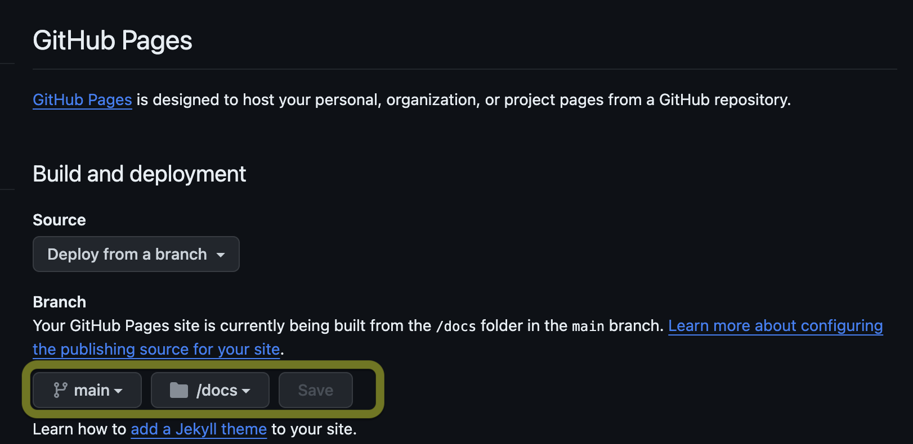

Sphinxとは¶
python製のドキュメント生成ツールでreSTやmarkdownで書かれたファイルをHTMLなどに変換することが可能。
github Pagesと連携することで、github上でドキュメントを公開できる。
Sphinxの初期設定¶
Sphinxのインストール¶
python環境がインストールされていることが前提となる。 以下のコマンドでインストールされているか確認して、されていなければインストールする。
$ python -V
pipでsphinxをinstall
$ pip install sphinx
Sphinxのクイックスタート¶
クイックスタートコマンドを実行し、SphinxのProjectを作成する。対話形式での設定例は以下。
$ sphinx-quickstart
> ソースディレクトリとビルドディレクトリを分ける（y / n） [n]: y
> プロジェクト名: project
> 著者名（複数可）: author
> プロジェクトのリリース []:
> プロジェクトの言語 [en]: ja
動作確認コマンド実行後にbuild/html/index.htmlのindex.htmlを開いてページの確認をする
$ make html
バックグラウンドでビルドし続ける¶
毎回、make htmlを実行するのは手間なので、autobuildをさせる。
ライブラリのインストール
$ pip install sphinx-autobuild
以下のコマンドを実行すると、localホストでビルドしてくれる。PORT_NUMを指定しない場合は8080で起動する。
$ sphinx-autobuild -b html source build/html --port [PORT_NUM]
Markdownのための設定¶
Sphinxをドキュメント化するにあたって、Markdownを利用するためには以下の設定が必要。
myst-parserをインストール
$ pip install --upgrade myst-parser
インストール後に、source/conf.pyについて、以下のように修正を追加する
変更前
# -- General configuration ---------------------------------------------------
# https://www.sphinx-doc.org/en/master/usage/configuration.html#general-configuration
extensions = []
templates_path = ['_templates']
変更後
# -- General configuration ---------------------------------------------------
# https://www.sphinx-doc.org/en/master/usage/configuration.html#general-configuration
extensions = [
'myst_parser'
]
source_suffix = {
'.rst': 'restructuredtext',
'.md': 'markdown',
}
templates_path = ['_templates']
テーマの変更¶
Sphinxで作成するドキュメントにはいくつかのテーマが準備されている。 conf.pyを修正することによって、簡単にテーマを変更することが可能。
readthedocsというテーマが見やすくておすすめ。
sphinx_rtd_themeのインストール
$ pip install sphinx_rtd_theme
インストール後に、source/conf.pyについて、以下のように修正を追加する
修正前
# -- Options for HTML output -------------------------------------------------
# https://www.sphinx-doc.org/en/master/usage/configuration.html#options-for-html-output
html_theme = 'alabaster'
html_static_path = ['_static']
修正後
# -- Options for HTML output -------------------------------------------------
# https://www.sphinx-doc.org/en/master/usage/configuration.html#options-for-html-output
import sphinx_rtd_theme
html_theme = 'sphinx_rtd_theme'
html_theme_path = [sphinx_rtd_theme.get_html_theme_path()]
github pagesの設定¶
作成したhtmlをgithub pagesで公開することができる。 また、githubで公開することで、どの環境からも修正を加えることができる。
リポジトリ設定¶
github pagesで公開を行う場合は、publicとして作成を行う。
git cloneにより、ローカルにリポジトリをクローンして、そのリポジトリ上でSphinxの設定を行う。
出力先の変更¶
github pagesでは、docs/index.htmlというパスを固定で参照しにいくので、docsというフォルダにも出力する必要がある。
Makefileを修正して、docsにも出力する設定を行う。
修正前
# Catch-all target: route all unknown targets to Sphinx using the new
# "make mode" option. $(O) is meant as a shortcut for $(SPHINXOPTS).
%: Makefile
@$(SPHINXBUILD) -M $@ "$(SOURCEDIR)" "$(BUILDDIR)" $(SPHINXOPTS) $(O)
修正後
# Catch-all target: route all unknown targets to Sphinx using the new
# "make mode" option. $(O) is meant as a shortcut for $(SPHINXOPTS).
%: Makefile
@$(SPHINXBUILD) -M $@ "$(SOURCEDIR)" "$(BUILDDIR)" $(SPHINXOPTS) $(O)
html: Makefile
@$(SPHINXBUILD) -b html "$(SOURCEDIR)" "docs" $(SPHINXOPTS) $(O)
github pagesの設定¶
リポジトリの/Setting/Pagesから、以下のように設定。

設定後、SphinxをPushするとGitHub Pageが作成され、URLからアクセス可能になる。